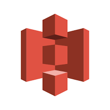
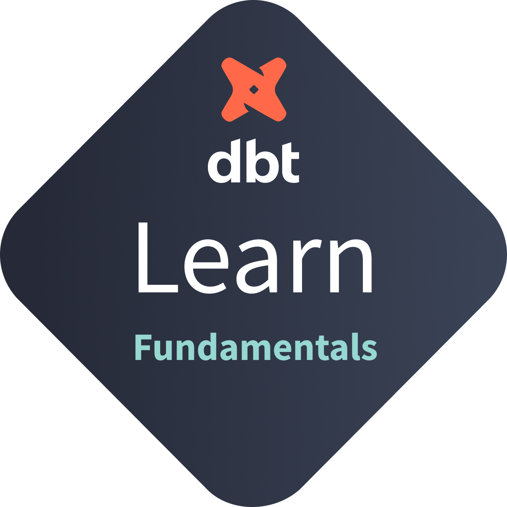
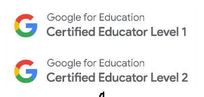

🚀 My Technology



Welcome! Thanks for stopping by. I’m a data and backend engineer who builds clean systems, thoughtful automation, and tools that support collaboration and mission-driven work.
Built a modern freight tracking simulation using dbt for data transformation and enrichment, Google Pub/Sub for real-time event streams, and Python scripts to simulate and publish shipping activity.
publisher.py and subscriber.py to stream and receive updates over Google Pub/Sub.faker and location enrichment via geopy for realistic test data.
# Example: Simulate event stream
python3 pubsub_sim/publisher.py
python3 pubsub_sim/subscriber.py
This project showcases how to architect streaming pipelines, integrate dbt transformations, and simulate freight tracking in a cloud environment.
Technologies: dbt, DuckDB, Python, Google Pub/Sub, geopy, faker
I designed and led the development of a Python-based automation system to back up and recreate Databricks jobs for production stability, disaster recovery, and workflow portability.
# Example: Save job settings to S3
key = f"backup_jobs/job_{job_id}_{today}.json"
s3.put_object(
Bucket=bucket_name,
Key=key,
Body=json_data,
ContentType="application/json"
)
This system reduced recovery time from hours to minutes and ensured traceable versioning of all production-critical ETL pipelines.
Technologies: SQL, Sigma, Delta Tables, Python, Databricks, APIs, JSON Data, Sheets, AWS S3
Built a modular JavaScript automation system to manage test environments for a Back4App-powered iOS app. Streamlined the creation, population, and cleanup of database classes to support consistent testing and rapid development.
classCreate.mjs and dataUpload.mjs dynamically generated class schemas and populated them with test data.teardown.mjs removed data and deleted classes to reset environments between test runs..env variables and Node.js for flexible, secure config management.
// teardown.mjs: Delete all data in a class
import fetch from 'node-fetch';
import dotenv from 'dotenv';
dotenv.config();
const className = "TestClass";
await fetch(`https://parseapi.back4app.com/classes/${className}`, {
method: 'DELETE',
headers: {
'X-Parse-Application-Id': process.env.APP_ID,
'X-Parse-REST-API-Key': process.env.REST_KEY
}
});
This automation supported Test-Driven Development (TDD) by enabling clean database states and faster iteration cycles during iOS development with Core Data.
Technologies: JavaScript (ES Modules), Node.js, RESTful APIs, Back4App (Parse), Environment Variables, Data Lifecycle Automation
Rebuilt a streaming data pipeline for corporate bond quotes to improve accuracy and processing speed. Focused on data normalization, duplication resolution, and job orchestration in a high-volume financial environment.
CTEs, window functions, and watermarking for time-aware deduplication and batching.
// SQL logic for deduplication (Scala version)
val windowSpec = Window.partitionBy("security_description",
"source_id", "record_id")
.orderBy(
when(col("is_C"), 3)
.when(col("is_B"), 2)
.when(col("is_A"), 1)
.otherwise(0).desc
)
val rankedDF = first.withColumn("row_num",
row_number().over(windowSpec))
val filteredDF = rankedDF.filter(
(col("is_C") === true && col("row_num") === 1) ||
(col("is_B") === true && col("row_num") === 1) ||
(col("is_A") === true && col("row_num") === 1)
).drop("row_num")
This work addressed a duplication challenge in corporate bond data workflows, reducing duplicates and improving reliability for downstream systems.
Technologies: SQL, Scala, Delta Tables, AWS S3, Databricks, Streaming APIs, JSON
A blend of backend engineering, automation, and data tools used across civic, financial, and educational projects.
| 🧠 Skill | 🔧 Tools | 💡 Use Case | 📊 Proficiency |
|---|---|---|---|
| Data Modeling | SQL, Sigma, Delta Tables | Pipeline monitoring & dashboards | ⭐️⭐️⭐️⭐️⭐️ |
| Custom Reporting | HTML, Mailchimp API | Automated report delivery | ⭐️⭐️⭐️⭐️⭐️ |
| Pipelines | PySpark, Databricks, S3 | Batch + streaming pipeline development | ⭐️⭐️⭐️⭐️ |
| API Automation | JavaScript, Python | Dynamic class and schema setup | ⭐️⭐️⭐️⭐️ |
| Streaming Pipelines | dbt, DuckDB, Google Pub/Sub | Real-time processing of simulated event data | ⭐⭐⭐ |
| Core Data Design | Swift, XCTest | iOS persistence & unit testing | ⭐️⭐️ |